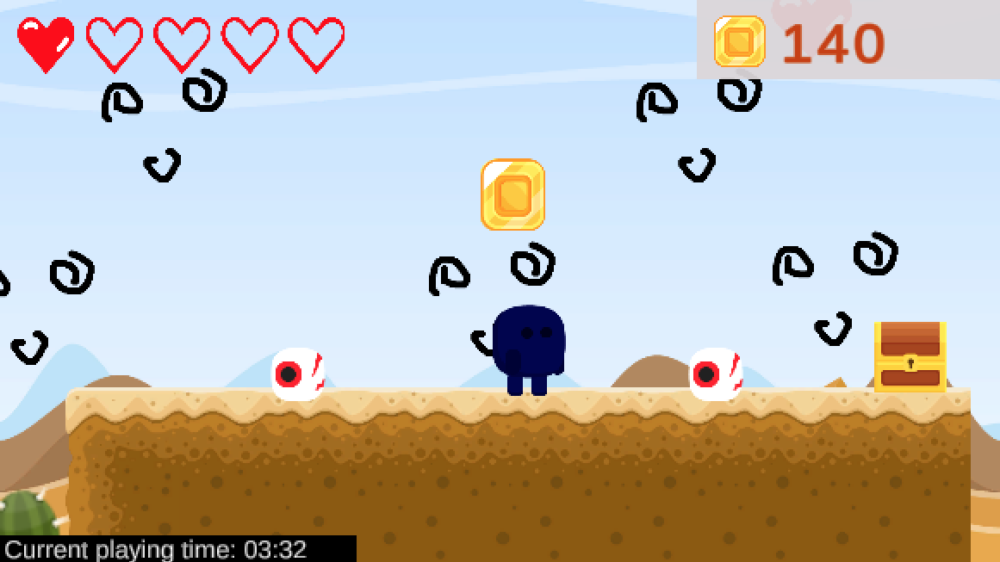

-
How Rewind Mechanics Affect Reflection, Player Experience, and Perceived Challenge in Games -- current study
Research Questions:
- How do narrative rewind mechanics relate to perceived challenge and evoke reflective player experiences?
- How do those narrative mechanics foster levels of reflection during and after gameplay?
- How does the levels of cognitive, emotional, and decision-making challenge respectively relate to engagement and other player experience constructs?
- How do those challenge levels relate to experiences of reflection?
Methods:
- 1. Interviews and "field" research
- 2. Surveys
- 3. Game Design and Development
Storytelling elements in educational games and simulations have been found to make learning more meaningful. Previous work has also found that games can afford reflective, emotional experiences of varying degrees. Games that are emotionally-moving or challenging have been found to evoke long-lasting memories for players. Therefore, there is potential to harness the reflective powers of games for the design of serious games with an agenda. We are creating a game modifying rewind mechanics to observe whether they affect perceived challenge by players and whether they afford an increase in reflective and emotionally engaging experiences. To address emotional aspects of gameplay, we are creating a narrative game focused on the complex experiences of a character discovering that they have bipolar II disorder, given that it is commonly misdiagnosed simply as depression.
-
Death & Rebirth - Failure in Games
Research Questions:
- How is failure -- death and rebirth/respawning -- structured and expressed in games?
- How do death and rebirth mechanics relate to respective player experience constructs, such as mastery, challenge, autonomy, curiosity, and immersion?
- How do player orientation traits relate to the experience of failure (death and rebirth mechanics) in games?
Methods:
- 1. Observations
- 2. Coding: Open, Axial, and Selective
- 3. Constructivist Grounded Theory
- 4. Surveys, Quantitative Analysis
- 5. Game Design and Development
Publications
Marjorie Ann Cuerdo, Anika Mahajan, and Edward Melcer. (2021). “Die-r Consequences: Player Experience and the Design of Failure through Respawning Mechanics". In 2021 IEEE Conference on Games (CoG). IEEE.Marjorie Ann Cuerdo and Edward Melcer. (2020). “’I’ll Be Back’: A Taxonomy of Death and Rebirth in Platformer Video Games”. In Extended Abstracts of the 2020 CHI Conference on Human Factors in Computing Systems. CHI '20, Honolulu, HI, USA. ACM.
Edward F. Melcer and Marjorie Ann M. Cuerdo. (2020). “Death & Rebirth in Platformer Games”. In Game User Experience and Player-Centered Design. Springer.
DescriptionFailure is a central aspect of almost every game, driving player perceptions of difficulty and impacting core aspects of game user experience. At the heart of failure in many game genres is player death, and platformer games in particular rely heavily on the use of death within their design. This work addresses the rich, underexplored space of in-game death (and respawning) through the creation of a generalized taxonomy of death in platformer games. The taxonomy consists of five notable dimensions: (1) obstacles, (2) death conditions, (3) aesthetics, (4) changes to player progress, and (5) respawn locations. These different dimensions have a number of potential implications for key aspects of player experience and design. The taxonomy could also be used to help improve the effectiveness of related engagement techniques such as dynamic difficulty adjustment.
We then explored how altering the consequences of death on player progress affected aspects of the player experience. Specifically, our research investigated the relationship of death and respawning mechanics – precisely the location of respawn points – to player experience (PX) constructs, such as mastery, challenge, autonomy, curiosity, and immersion. We developed a simple 2D platformer game that only differed in respawn point locations: the start of the game (permadeath), the start of a level, the last reached checkpoint, and the last manually saved point. 
-
Playful Embodied Interaction
Research Question:
- How does object placement in a tangible play space influence players’ collaborative interaction strategies?
PublicationsKatelyn Grasse, Marjorie Ann Cuerdo, and Edward Melcer. (2021). “Mad Mixologist: Exploring How Object Placement in Tangible Play Spaces Affects Collaborative Interaction Strategies”. In Proceedings of the 3rd IEEE Conference on Games (CoG). IEEE.
AbstractTangible games afford an engaging and often unique form of hybrid play (i.e., physical-digital elements), but there is currently limited work explicitly exploring how these games can be designed to provide spatial affordances that implicitly encourage collaboration. In this paper, we present a novel collaborative tangible game, titled Mad Mixologist, and investigate how making a simple change in the location of game objects within the tangible play space can lead to significantly different collaborative interaction strategies. The results from our group comparison study indicate that 1) players with exclusively direct access to multiple relevant resources (i.e., a digital instruction and a physical object) were more likely to assume responsibility for completing tasks in a shared play space and 2) distributing these same task-relevant resources across multiple players created ambiguity over whether the player with the digital or physical resource should engage with the shared play space. This study demonstrates one possible way in which the physical design of a tangible game can be arranged to implicitly encourage players to develop more collaborative interaction strategies, specifically by distributing exclusive resources across players. Overall, this study highlights and reinforces the connection between spatial affordances and social interactions via embodied facilitation within the context of collaborative tangible games.